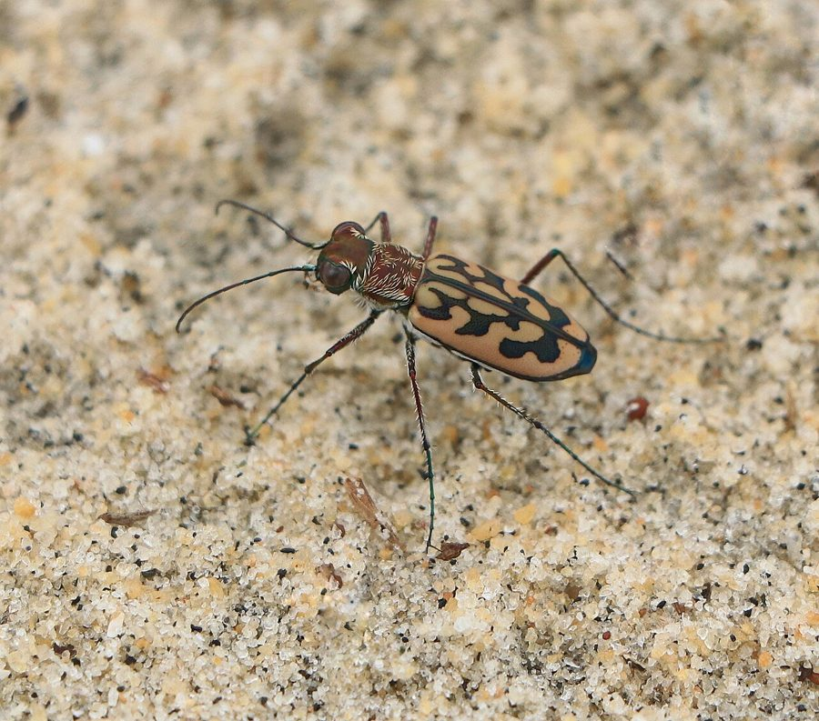

कैंसिलेट टाइगर बीटलCancellate Tiger Beetle
Lophyra cancellata · Carabidae · INS-0298

- Scientific name वैज्ञानिक नाम
- Lophyra cancellata (Dejean, 1825)
- Family कुल
- Carabidae
- Hindi हिंदी
- कैंसिलेट टाइगर बीटल
- Local names स्थानीय नाम
- cancellate tiger beetle
- Status here यहाँ की स्थिति
- native
- Movement आवागमन
- Resident, here all year
- Known from कहाँ दर्ज
- Others have published records from the wider Awadh–Purvanchal plain, none yet from Basti–Ayodhya अवध–पूर्वांचल से दूसरों के प्रकाशित अभिलेख, बस्ती–अयोध्या से अभी नहीं
- IUCN IUCN
- not evaluated
- Review समीक्षा
- not yet reviewed
When to look कब देखें
Expected mainly in March, April, May, June, July, August, September, October. मुख्यतः मार्च, अप्रैल, मई, जून, जुलाई, अगस्त, सितंबर, अक्टूबर में अपेक्षित।
Tell it apart from इनसे अलग पहचानें
कैंसिलेट टाइगर बीटल / Cancellate Tiger Beetle
Lophyra cancellata (Dejean, 1825) — Carabidae
कैंसिलेट टाइगर बीटल — नदियों के रेतीले किनारों और कछारों पर बेहद तेजी से दौड़ने वाला एक शिकारी भौंरा, जिसकी पीठ पर जालीदार सफेद-पीले निशान होते हैं।
Quick Identification त्वरित पहचान
| Feature | Description |
|---|---|
| Coloration | Dark coppery-bronze or metallic greenish-bronze with shiny reflections |
| Elytral pattern | Elaborate whitish-testaceous latticed markings resembling branching antlers |
| Head | Shining metallic coppery-green, deeply excavated and striated between eyes |
| Eyes | Very large, prominent, spherical, providing wide-angle predatory vision |
| Labrum | Large, broad, ivory-white, produced in front with small dark marginal teeth |
| Mandibles | Long, sickle-shaped, sharp, overlapping, armed with sharp inner teeth |
Field tip: Runs in rapid bursts and takes short low flights on sunlit river sandbars; pale antler-like latticed pattern on metallic bronze back is distinctive.
हिंदी: रेतीले किनारों पर धूप में बिजली जैसी तेजी से दौड़ने वाला तांबई-कांस्य भौंरा, जिसकी पीठ पर सफेद जालीदार आकृतियां होती हैं।
Morphology आकारिकी
Measurement not available in consulted sources.
A small to medium-sized, highly cursorial tiger beetle with a compact, cylindrical body displaying metallic bronze, coppery, and green reflections. The head is relatively large, wider than the prothorax, coppery-bronze on the vertex with metallic green or bluish lateral margins; the space between the eyes is deeply excavated and strongly longitudinally striated. The compound eyes are enormous, spherical, and protruding. The labrum is large, conspicuous, ivory-white, produced anteriorly, and armed with dark marginal teeth. Mandibles are formidable: long, curved, sickle-like, armed with multiple sharp interlocking teeth.
The pronotum is subquadrate, about as long as broad, finely sculptured, dull coppery with metallic green reflections and straight sides bearing sparse white setae on the lateral margins.
The elytra are subparallel-sided, slightly widened posteriorly, strongly impressed behind the shoulders. The ground color is dark coppery-bronze or greenish-black, overlaid with an elaborate, whitish-testaceous latticed (cancellate) pattern consisting of broad, interconnected, antler-like branching bands that join the suture at multiple points and run along the lateral margins. Underneath, the thoracic sterna and abdomen are violaceous and brilliant fiery coppery, clothed laterally in dense white decumbent setae. Legs are long, slender, metallic green and copper, built for high-speed sprinting over loose sand.
हिंदी: इसका शरीर तांबई चमक वाला और मजबूत होता है। बड़ी उभरी हुई आंखें, सफेद हंसिया जैसे तेज दांत और पीठ पर हिरण के सींग जैसी जालीदार धारियां होती हैं।
Behaviour & Ecology व्यवहार और पारिस्थितिकी
Lophyra cancellata is a thermophilic, diurnal ground predator restricted to open, sun-exposed sandy substrates. It requires hot surface temperatures to achieve optimal hunting efficiency. During sunny hours, adults sprint across bare sand in lightning-fast bursts, periodically stopping to scan the surroundings with their large eyes before lunging forward to seize prey with their sharp sickle-shaped mandibles.
When approached, the beetle takes flight with explosive speed, flying low over the sand for a few meters before landing facing the pursuer. The diet consists of small, soft-bodied shore invertebrates, including chironomid midges, shore flies (Ephydridae), springtails, small ants, and insect larvae washed ashore along the river margin. Adults also scavenge on dead insects stranded at the water's edge.
हिंदी: यह केवल तेज धूप में रेत पर शिकार करता है। थोड़ी-थोड़ी दूर पर रुक-रुक कर यह दौड़ता है और मक्खियों को पकड़ता है। आहट पाते ही यह तुरंत उड़ जाता है।
Life Cycle / Phenology जीवन चक्र
Breeding takes place during the warm pre-monsoon and monsoon seasons. Mating occurs on open sandbars, with the male holding the female's thorax using his specialized dilated front tarsi.
Females oviposit single eggs into moist, fine sand slightly above the water table. The cylindrical, predatory larva constructs a vertical burrow in the sand, anchoring itself with hooks on the fifth abdominal tergum. The larva positions its flattened head and pronotal disc flush with the burrow opening, acting as a living trapdoor to ambush small insects walking across the surface. Pupation occurs at the bottom of the burrow, with adult beetles emerging to coincide with receding river levels.
हिंदी: मादा रेत में एक-एक करके अंडे देती है। इसका लार्वा रेत में गहरा सीधा बिल बनाकर बैठता है और ऊपर से गुजरने वाले कीड़ों को बिल में खींच लेता है।
Host Plants or Prey आहार
Carnivorous cursorial predator in both adult and larval stages. Preys upon small shore insects, including sand midges, shore flies, young grasshopper nymphs, springtails, and small beetles inhabiting sandy river shores. Often co-occurs with Lophyra vittigera and Cicindela sexpunctata.
हिंदी: यह मांसाहारी भृंग है जो नदी तट की मक्खियों, चींटियों और छोटे कीड़ों का शिकार करता है।
Predators / Natural Enemies शत्रु
Adults running on open sandbars are hunted by insectivorous birds such as plovers, sandpipers, wagtails, and pratincoles. Robber flies (Asilidae) frequently ambush tiger beetles in flight, while wolf spiders (Lycosidae) capture them on the ground. Larvae in burrows are parasitized by specialized tiphiid wasps (Methocha).
हिंदी: टिटहरी, बगुले और खंजन जैसे नदी किनारे के पक्षी इसे खाते हैं। रेत पर रहने वाली भेड़िया मकड़ियां भी इसका शिकार करती हैं।
Agricultural / Human Relevance कृषि प्रासंगिकता
Lophyra cancellata is an entirely beneficial insect with no negative agricultural impact. As top invertebrate predators of riverine sand ecosystems, tiger beetles play an essential ecological role in population regulation of shoreline insects. Tiger beetles are also globally recognized as sensitive bioindicators of riparian habitat quality and riverbed disturbance.
हिंदी: यह नदी तट के पर्यावरण का संतुलन बनाने वाला एक उपयोगी शिकारी कीट है। यह नदी के प्राकृतिक और स्वच्छ वातावरण का सूचक है।
Expected Locally स्थानीय रूप से अपेक्षित
Not a field record. Written from published accounts for eastern Uttar Pradesh. No confirmed local sighting yet — if you have seen it, that is what the atlas needs.
अभी तक स्थानीय पुष्टि नहीं। यह विवरण प्रकाशित स्रोतों से है, किसी अवलोकन से नहीं।
GBIF holds published records from the wider Awadh–Purvanchal plain, none yet from Basti–Ayodhya. Expected along the sandy banks, islands, and diara sandbars of the Ghaghara, Kuwana, and Ami rivers throughout Basti district. Visit sunlit sandy shores between May and September; look for rapid, glittering insects running across the sand and taking short flights. A first record would be a photograph of the adult with place and date, sent through the About page.
Distribution वितरण
Global range: South and Southeast Asia, recorded from India, Sri Lanka, Nepal, Myanmar, Thailand, Vietnam, and Indonesia.
In India: Widespread across major river systems of the Indo-Gangetic plain, peninsular India, and coastal river deltas.
In Uttar Pradesh: Documented along the Ganges, Yamuna, Ghaghara, and major river drainage sandbars across the state.
In Basti district / eastern UP: Expected on exposed sandbars and sandy beaches along the Ghaghara and Kuwana rivers.
हिंदी: यह भारत की प्रमुख नदियों के रेतीले कछारों में पाया जाता है। उत्तर प्रदेश में घाघरा और अन्य नदियों के किनारों पर यह आम है।
Research Questions शोध प्रश्न
- How do seasonal monsoon floods and diara submergence affect the larval burrow survival of Lophyra cancellata?
- What is the spatial niche partitioning between Lophyra cancellata and Lophyra vittigera on shared Ghaghara sandbars?
- Can tiger beetle density along the Kuwana River serve as an index of sand-mining disturbance and river health?
- क्या घाघरा नदी के दियारा क्षेत्रों में रेत खनन से इस शिकारी भौंरे के आवास पर गंभीर प्रभाव पड़ता है?
- क्या मानसून के बाद रेत सूखने पर इसके नए वयस्क एक साथ बाहर निकलते हैं?
Similar Species मिलती-जुलती प्रजातियाँ
| Species | Key Difference | हिंदी | |
|---|---|---|---|
| Lophyra vittigera ([[vittate_tiger_beetle | Vittate Tiger Beetle]]) | Pattern consists of continuous longitudinal pale stripes rather than antler-like cancellate bands | विटेट टाइगर बीटल |
| Cicindela sexpunctata ([[tiger_beetle | Tiger Beetle]]) | Greenish body with six discrete white spots on the margins; lacks branching latticed network | छह-धब्बेदार टाइगर बीटल |
| Cicindela angulata ([[angulate_tiger_beetle\ | Angulate Tiger Beetle]]) | Darker bronze; elytral markings form sharp V-shaped angles rather than complex latticed antler bands | नुकीला टाइगर बीटल |
Field rule: Metallic coppery-bronze tiger beetle of sandy river shores with an intricate, whitish-testaceous antler-like cancellate pattern across the elytra = Lophyra cancellata.
Taxonomy & Classification वर्गीकरण
Original description. Described by Pierre François Marie Auguste Dejean (1825) in Spécies général des coléoptères, vol. 1, p. 116, under the name Cicindela cancellata. Later transferred to the genus Lophyra Motschulsky, and treated in British Indian faunistic literature by Fowler (1912) under Cicindela. The specific epithet cancellata is Latin for latticed or cross-barred, referring to the intricate network of elytral markings.
Subspecies. Monotypic — no subspecies are currently recognized.
Family and order placement. Order Coleoptera, suborder Adephaga, family Carabidae (ground beetles), subfamily Cicindelinae (tiger beetles). Often treated in older literature as a distinct family, Cicindelidae.
IUCN status rationale. Not evaluated. Widespread and locally abundant along major river systems across South Asia.
हिंदी: इसे 1825 में डेजीन ने Cicindela cancellata नाम दिया था, बाद में इसे Lophyra में रखा गया। यह काराबिडी परिवार का टाइगर बीटल है।
Photo Gallery फोटो गैलरी
No photos yet — add field photos to media/species/cancellate_tiger_beetle/ and run node scripts/sync_photos.js.
Photos needed आवश्यक फोटो
- [ ] Adult running on sunlit river sand showing dorsal cancellate pattern (रेत पर दौड़ते भौंरे की तस्वीर)
- [ ] Close-up of head showing large eyes and sickle-shaped mandibles (सिर और जबड़ों की सूक्ष्म तस्वीर)
References संदर्भ
- Dejean, P. F. M. A. (1825). Spécies général des coléoptères, de la collection de M. le Comte Dejean. Vol. 1. Méquignon-Marvis, Paris, 463 pp. (as Cicindela cancellata).
- Fowler, W. W. (1912). The Fauna of British India, Including Ceylon and Burma: Coleoptera: General Introduction and Cicindelidae and Paussidae. Taylor and Francis, London, pp. 424–425. (as Cicindela cancellata).
- GBIF Occurrence Data — Lophyra cancellata, India (2025).
Source file: species/fauna/insects/cancellate_tiger_beetle.md